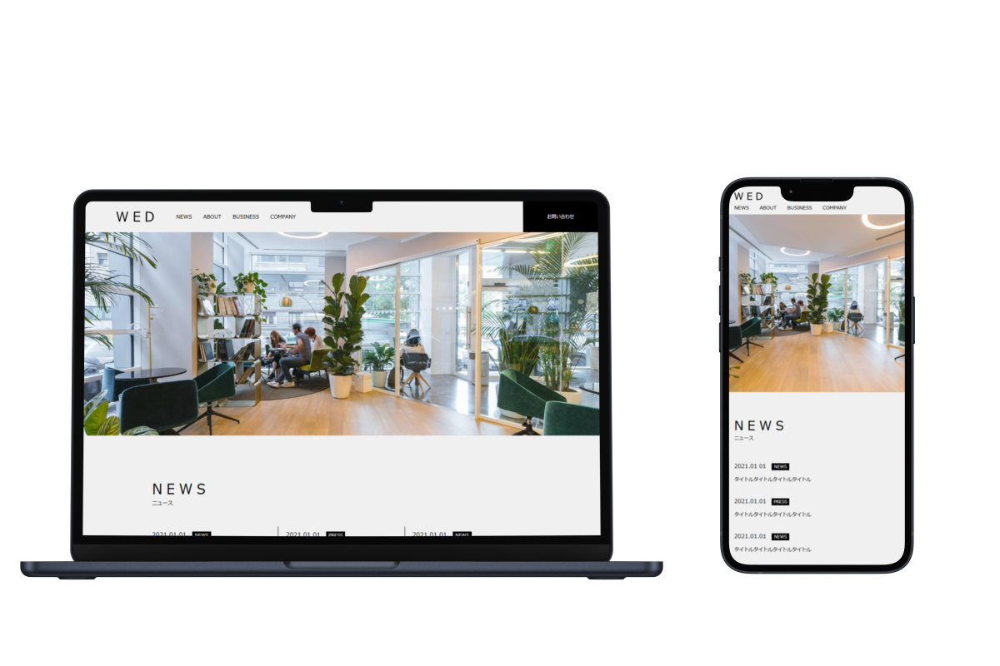
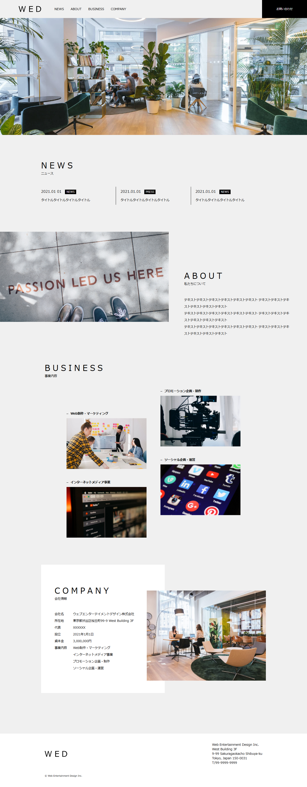
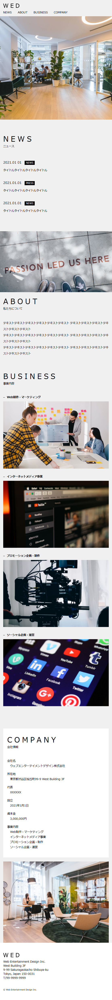

Webサイト模写
学習用にWebサイトを模写しました
制作概要
- 制作期間：約2週間
- 使用ツール：HTML / CSS
- 担当範囲：デザイン再現 / コーディング
完成デザイン
PC

SP

工夫した点・学んだこと
単に見た目を真似するのではなく、 「なぜこの位置にあるのか」「なぜこのサイズなのか」を考えながら 構造を理解することを意識しました。
まとめ
PC表示では問題なく見えても、 SP表示では文字が詰まったり、要素がずれてしまうことがありました。 そのため、 メディアクエリの書き方 SPでは縦並びに切り替える 余白や文字サイズを調整する といった点を意識し、 画面サイズごとの見え方の違いを学ぶことができました。